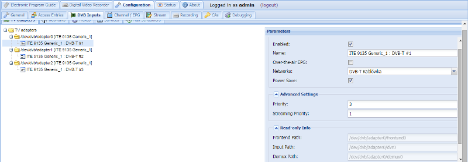

Configuration - DVB Inputs - TV Adapters
The adapters and tuners are listed and edited in a tree.
To edit an item, click on it. To commit edited changes back to Tvheadend press the ‘Save’ button. In order to change a Checkbox cell you only have to click once in it.

Basic Settings
Enabled : If selected, this tuner/adapter will be enabled and will become available to receive broadcasts or programmes.
Name: : The name of this tuner.
Over-the-Air EPG : Enable over-the-air programme guide (EPG) scanning on this input device.
Networks : Associate this device with one or more networks.
Advanced Settings
Priority : The tuner priority value (higher value = higher priority to use this tuner).
Streaming Priority : The tuner priority value for streamed channels through HTTP or HTSP (higher value = higher priority to use this tuner). If not set (zero), the standard priority value is used.
Init Scan : Allow the initial scan tuning on this device (scan when Tvheadend starts). See to Skip initial Scan in the network settings for the further description.
Idle Scan : Allow the idle scan tuning on this device.
Linked Input : Always make alive also the linked input. The subscriptions are named as “keep”.
LinuxDVB Specific Rows
Power Save : If enabled, allows the tuner to go to sleep when idle.
Tune Before DiseqC : If set, one tune request (setup) is proceed before the DiseqC sequence (voltage, tone settings). Some linux drivers require this procedure.
Tune Repeats : If set, the tune requests are repeated using this number. Zero means one tune requests, one two tune requests etc.
Skip Initial Bytes : If set, first bytes from the MPEG-TS stream are discarded. It may be required for some drivers / hardware which does not flush completely the MPEG-TS buffers after a frequency/parameters change.
Input Buffer (Bytes) : By default, linuxdvb input buffer is 18800 bytes long. The accepted range is 18800-1880000 bytes.
Status Period : By default, linuxdvb status read period is 1000ms (one second). The accepted range is 250ms to 8000ms. Note that for some hardware / drivers (like USB), the status operations takes too much time and CPU. In this case, increase the default value. For fast hardware, this value might be descreased to make the decision of the re-tune algorithm based on the signal status faster.
Force old status : Always use the old ioctls to read the linuxdvb status (signal strenght, SNR, error counters). Some drivers are not matured enough to provide the correct values using the new v5 linuxdvb API.
LinuxDVB Satellite Config Rows
DiseqC repeats : Number of repeats for the DiseqC commands (default is zero - no DiseqC repeats).
Full DiseqC : Always sent the whole DiseqC sequence including LNB setup (voltage, tone). If this is not checked, only changed settings is set. It may cause issues with some drivers. If the tuning is not reliable, try to activate this option.
Turn off LNB when idle : Turn off LNB when it is not used. It may save some power.
Switch Then Rotor : If the DiseqC switch is before rotor (tuner - switch - rotor), enable this.
Init Rotor Time (seconds) : Upon new start, tvheadend does not know the last rotor position. This value defined the initial rotor movement. TVHeadend waits the specified seconds when the first movement is requested.
Min Rotor Time (seconds) : The minimum delay after the rotor movement command is send.
SAT>IP Specific Rows
Full Mux Rx mode supported : Enable if the SAT>IP box supports the full mux rx mode (pids=all)\ note: no comma after ‘Enable’
Signal scale (240 or 100) : Some SAT>IP boxes only report a 0-100 (percentage) signal strength. If your signal strength reports as too low, try setting this to 100.
Maximum PIDs : Maximum supported PIDs in the filter of the SAT>IP box.
Maximum length of PIDs : Maximum length in characters for the command setting PIDs to the SAT>IP box.
Addpids/delpids supported : Enable if the SAT>IP box supports the addpids/delpids command.
PIDs in setup : Enable, if the SAT>IP box requires pids=0 parameter in the SETUP RTSP command.
Double RTSP Shutdown : Enable, if the SAT>IP box might require to send twice the RTSP SHUTDOWN command.
Force pilot for DVB-S2 : Enable, if the SAT>IP box requiest plts=on parameter in the SETUP RTSP command for DVB-S2 muxes.
UDP RTP Port Number (2 ports) : Force the local UDP Port number here. The number should be even (RTP port). The next odd number (+1) will be used as the RTCP port.
Satellite Positions : Select the number of satellite positions supported by the SAT>IP hardware and your coaxial cable wiring.
Master Tuner : Select the master tuner.
The signal from the standard universal LNB can be split using a simple coaxial splitter (no multiswitch) to several outputs. In this case, the position, the polarization and low-high band settings must be equal.
If you set other tuner as master, then this tuner will act like a slave one and tvheadend will assure that this tuner will not use incompatible parameters (position, polarization, lo-hi).
Next tune delay in ms (0-2000) : The delay before tuning in milliseconds after tuner stop. If the time after previous start and next start is greater than this value - the delay is not applied.
Send full PLAY cmd : Send the full RTSP PLAY command after full RTSP SETUP command. Some device firmwares require this to get MPEG-TS stream.
Override tuner count : Force tvheadend to see a specific number of tuners.
Some devices, notably AVM’s FRITZ!Box Cable 6490, report wrong number of tuners and this setting allows you to override that. Any value below 1 or above 32 is ignored. For now this setting requires a restart of tvheadend.
PIDs 21 in setup : Enable, if the SAT>IP box requires pids=21 parameter in the SETUP RTSP command.
Force teardown delay : Force the delay between RTSP TEARDOWN and RTSP SETUP command (value from ‘Next tune delay in ms’ is used). Some devices are not able to handle quick continuous tuning.
Tuner bind IP address : Force all network connections to this tuner to be made over the specified IP-address, similar to the setting for the SAT-IP - device itself. Setting this overrides the device - specific setting.